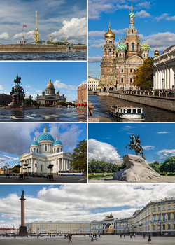

Pietari on noin 5,3 miljoonan asukkaan suurkaupunki Venäjällä. Pietari on Venäjän toiseksi suurin ja Euroopan neljänneksi suurin kaupunki. Se sijaitsee Suomenlahden pohjukassa Nevan suistossa, osittain Karjalankannaksen kaakkoisosassa ja suiston saarissa, ollen maansa tärkein Itämeren satamakaupunki. Pietarin perusti tsaari Pietari Suuri vuonna 1703 hallintopaikakseen. Se on rakennettu suomalaisheimojen ikivanhan kauppapaikan Nevanlinnan paikalle ja tunnetaan nykyään Venäjän "pohjoisena pääkaupunkina". Pietari toimi Venäjän keisarikunnan olemassaolon ajan maan pääkaupunkina, kunnes bolsevikkivallankaappauksen synnyttämä neuvostovalta siirsi hallintonsa Moskovaan maaliskuussa 1918.
